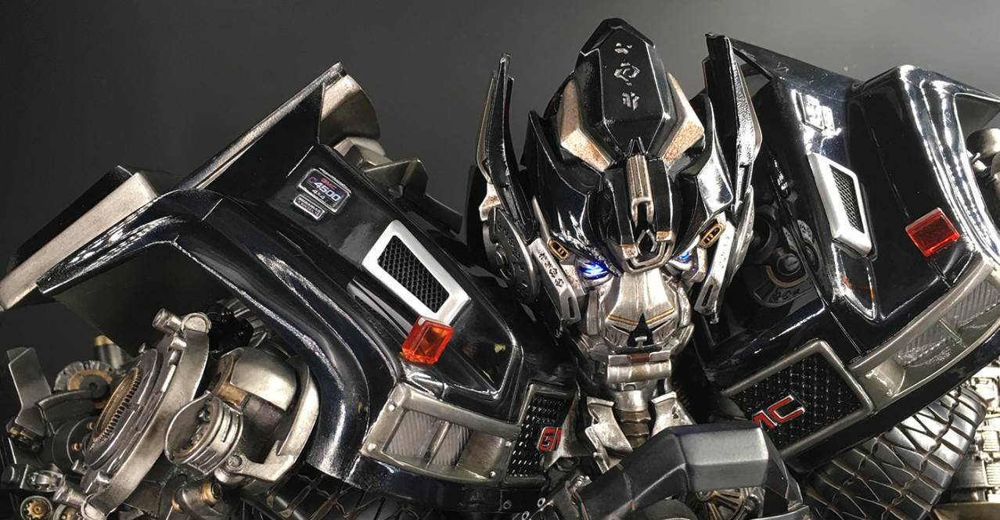
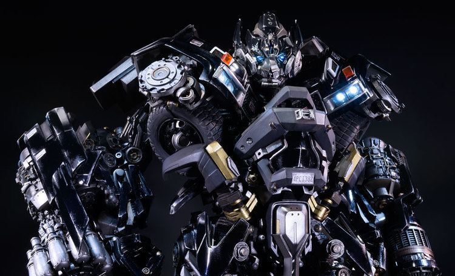

Ironhide là chuyên gia vũ khí thường trú của Autobots và là bạn cũ của Optimus Prime . Anh ấy già vì anh ấy khó tính . Anh ấy có thể có đủ các bộ phận thay thế để xây dựng một đội quân nhỏ, nhưng Ironhide kiên quyết không chịu lăn xả và chết vì bất kỳ ai. Anh ta sẽ chiến đấu đến cùng và hạ gục nhiều Decepticons hơn trong quá trình này. Ironhide không phải lúc nào cũng đồng cảm với Prime, bất chấp tình bạn của họ. Anh ấy có lẽ là người thực tế hơn trong hai người, và vui vẻ hơn một chút, vì vậy anh ấy có thể sẵn sàng đẩy mã Autobot đến giới hạn nếu anh ấy nghĩ rằng nó sẽ hoàn thành công việc nhanh hơn. Anh ta có nhiều súng hơn một quốc gia nhỏ hơn ở thế giới thứ ba, và anh ta có thể đã hoặc không làm nổ tung một hành tinh bằng những khẩu súng nói trên. Ironhide sở hữu một giọng Oceanic khác thường, mơ hồ .

Đáp lại lời kêu gọi hỗ trợ của Bumblebee, Ironhide và các Autobot khác dưới sự chỉ huy trực tiếp của Optimus Prime đã đến Trái đất , với người lính già đáp xuống một hồ bơi ngoại ô. Khi anh ta trèo lên khỏi mặt nước, một cô bé loài người đã hỏi anh ta rằng liệu anh ta có phải (trong tất cả mọi thứ) là tiên răng hay không trước khi anh ta nhanh chóng trốn sau một số cây khi cha mẹ của đứa trẻ ra khỏi nhà. Anh ta lướt qua chiếc xe tải GMC Topkick của họ và biến hình, rời khỏi dinh thự. Anh ấy liên kết với Jazz và Ratchet , và họ tiến đến điểm hẹn, nơi họ gặp Optimus và Bumblebee. Sau khi gặp Sam Witwicky và Mikaela Banes , Ironhide tỏ ra háo hức muốn khoe những khẩu đại bác của mình, và tạo ấn tượng cổ điển với Clint Eastwood khi thể hiện điều đó bằng cách nói "Bạn có cảm thấy may mắn không, đồ punk?" (khiến anh ấy bị Optimus khiển trách ngay lập tức).

Sau khi Sam, Mikaela và cha mẹ của cậu bị Sector Seven bắt giữ , Ironhide đã có một cơ hội thực sự tốt để thể hiện những khẩu đại bác của mình khi anh và các Autobot khác hoàn toàn vượt trội so với các đặc vụ S7 bằng cách ngay lập tức tước vũ khí của họ, sau đó giải cứu cậu bé và cô gái của anh ta . Thật không may, cuộc trốn thoát của họ chỉ tồn tại trong thời gian ngắn, vì Bumblebeeđã bị bắt bởi các đặc vụ bí ẩn sau khi cứu mạng Sam và Mikaela. Sáng hôm sau, khi Optimus Prime đang cân nhắc hành động tiếp theo của họ, Ironhide hỏi tại sao họ phải cứu con người, khiến Prime bắt đầu một trong những bài phát biểu dài của mình về tự do và sự hy sinh, kết luận rằng con người không cần phải trả giá cho những sai lầm của Cybertron. -tốt bụng, và nếu cần, anh ta sẽ phá hủy AllSpark bằng cách kết hợp nó với tia lửa của chính mình. Được truyền cảm hứng bởi lời nói của anh ấy, Ironhide không tranh luận gì thêm, và các Autobot lên đường đến vị trí của AllSpark, Đập Hoover . Đi được nửa đường, trước sự ngạc nhiên của họ, họ thấy Bumblebee dẫn đầu một cột xe tấn công của Sector Seven, vì vậy Ironhide và phần còn lại của Autobots đã gia nhập đơn vị.
Ironhide đóng vai trò là đơn vị hỗ trợ Autobot ở Thượng Hải khi NEST săn lùng Decepticons. Khi Thiếu tá Lennox nói với anh ta rằng họ có tiếng vang của các lần đọc năng lượng, Ironhide chuyển sang chế độ người máy và xác nhận rằng mục tiêu của họ đang ở gần đó, nói rằng anh ta có thể ngửi thấy mùi của anh ta. Thật không may, Decepticon được đề cập lại là Demolishor . Ironhide đuổi theo Decepticon khổng lồ khi nó gầm rú qua các con phố trước khi Optimus Prime được triển khai từ trên không và tấn công Demolishor, cho phép Ironhide nhảy lên cấu trúc của anh ta và bắn ra bánh xe khổng lồ của anh ta, khiến anh ta đâm sầm vào một nhà kho. Ironhide đứng cùng với chỉ huy của mình khi Optimus chuẩn bị ra đòn kết liễu, lắng nghe lời cảnh báo của Demolishor về việcSự trở lại của The Fallen trước khi chết. Ironhide quay trở lại căn cứ, nghỉ ngơi ở chế độ thay thế trong nhà chứa máy bay của mình trong khi Optimus hội ý với William Lennox , Tướng Morshower và Theodore Galloway .